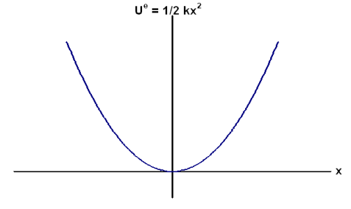

A mathematical approximation to the restoring behavior of springs and other elastic solids under small deformations.
The elastic restoring force from a spring acting on a mass m with the other end of the spring braced against aninfinitely massive wall has the form:
\( F^{e}_{mw} = - kx \)
where x is the displacement of the end of the spring away from its equilibrium position, and k is a constant of proportionality known as the spring constant or the force constant. The value of k is different for different springs, with stiffer springs having larger k values. The units of k are Newtons times meters (N m).
The defining relationship for Simple Harmonic Motion in the x-direction is:
\[ a_{x} = -\omega^{2} x\; \]
where ω (which is the angular frequency of the resulting motion) is a constant.
It is possible to show that a mass attached to a spring which is fixed to an infinitely massive object at the other end will satisfy this relationship. Assuming the spring provides the only force on the mass, Newton's Second Law tells us:
\( F_{net,x} = -kx = ma_{x}\;\)
giving:
\( a_{x} = -\frac{k}{m} x \)
which is in the form of the equation for simple harmonic motion provided that we make the identification:
\( \omega = \sqrt{\frac{k}{m}}\)
The elastic restoring interaction is conservative. When an internal elastic restoring interaction is present, it is customary to represent its effects in the Mechanical Energy description of motion by defining an associated elastic potential energy. The elastic potential energy is generally chosen to be zero when the spring is at its equilibrium length:
\( U(x=0) = 0\;\)
With this choice, the elastic potential energy takes the form:
\( U^{e} = \frac{1}{2}kx^{2}\)
The potential energy curve for the elastic potential energy is therefore parabolic:

This graph indicates the presence of a point of stable equilibrium at x=0.